The multinomial-Dirichlet model estimates voter transitions between parties by computationally exploring an enormous space of possible explanations. It does this by repeatedly drawing from probability distributions representing plausible voter behavior and comparing those draws against observed election outcomes. Given enough exploration, runs that begin from different random starting points should ultimately describe the same underlying pattern — they should “converge.”
To guard against any single run becoming trapped in one region of that space, I ran the model ten times for each transition. Comparing those runs reveals whether they reached similar conclusions. They did not. Different runs produced substantively different estimates of voter movement, making it impossible to be confident in any particular account.
This instability is not merely a technical problem — it is a historical finding. If a consistent pattern of voter transfers existed and the available quantitative evidence captured it reasonably well, the runs would agree. The fact that they do not suggests that the residual variation is not random noise but structured local difference: different constituencies behaved differently in ways the model cannot reconcile into a single description. Even after accounting for wealth, degree of urbanization, immigrant status, religious affiliation, and geographic location, no stable common pattern emerges. Factors that resist quantification — personal relationships, political culture, party organization, localized contingency — do not appear in census records, but their effects appear here, in the model’s failure to converge.
The two heatmaps display complementary evidence of this instability. The first shows maximum R-hat values for each transition: a measure of how differently the ten runs behaved. Values at or below 1.01 indicate confident convergence; values above 1.05 are cause for concern; values above 1.1 indicate that different runs explored meaningfully different ranges of outcomes. The second heatmap shows the spread between the highest and lowest transition estimates across runs — a direct measure of how much the substantive conclusions vary. In both cases, lower values indicate greater reliability.
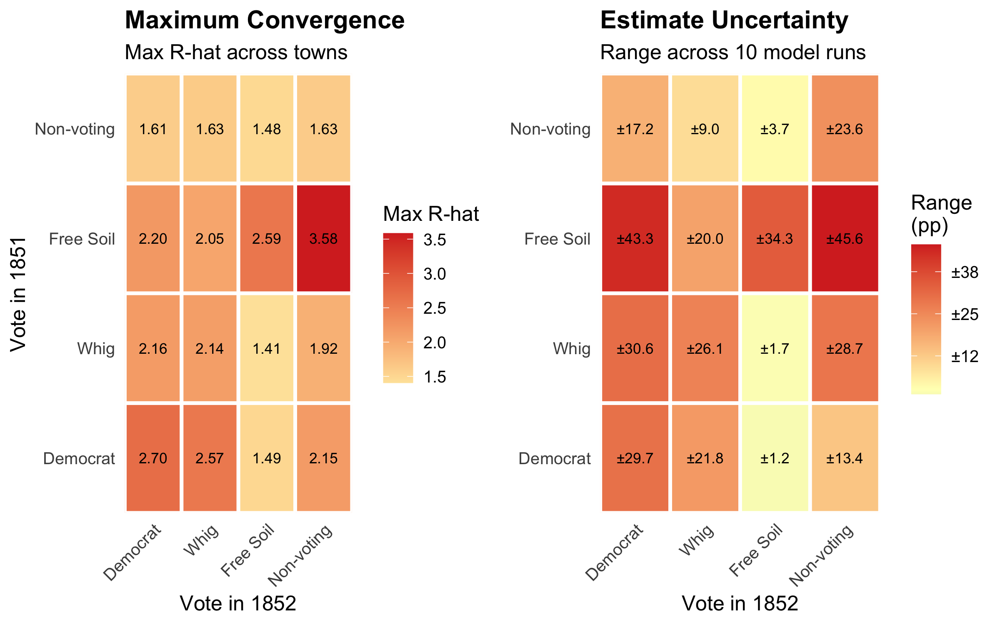
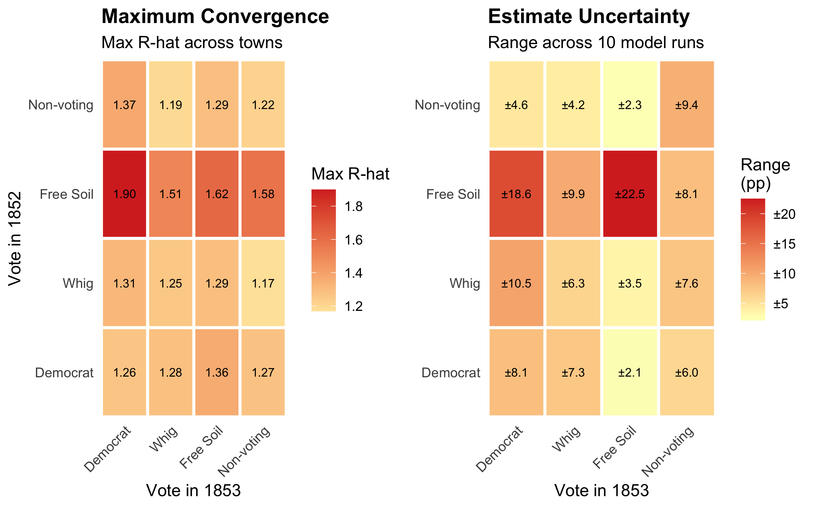
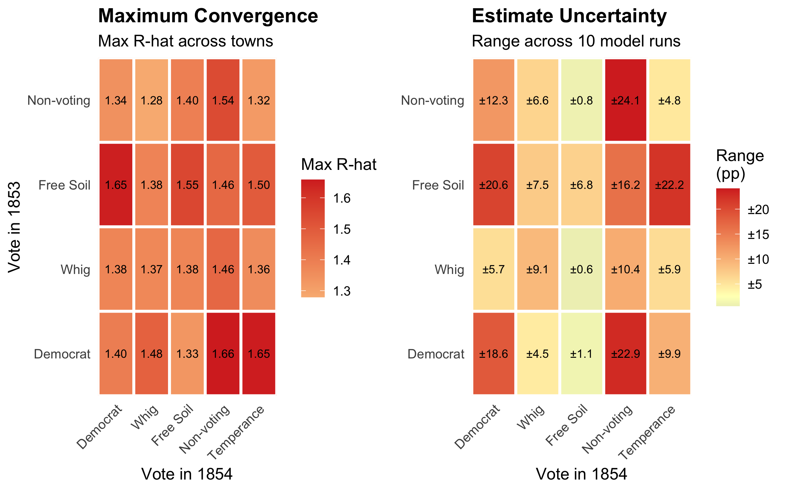
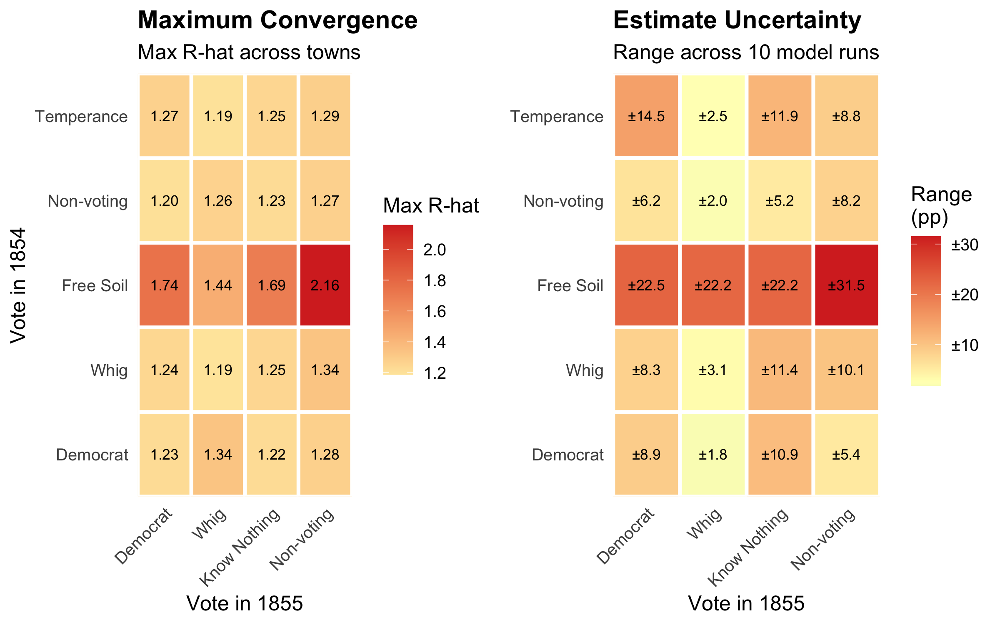
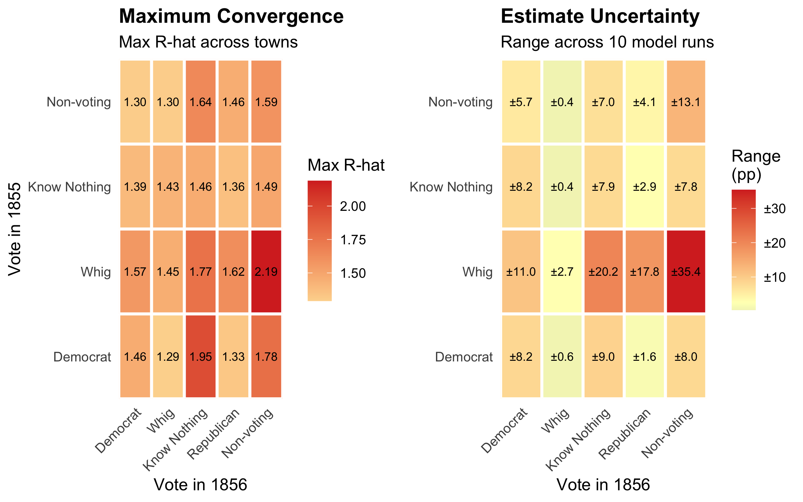
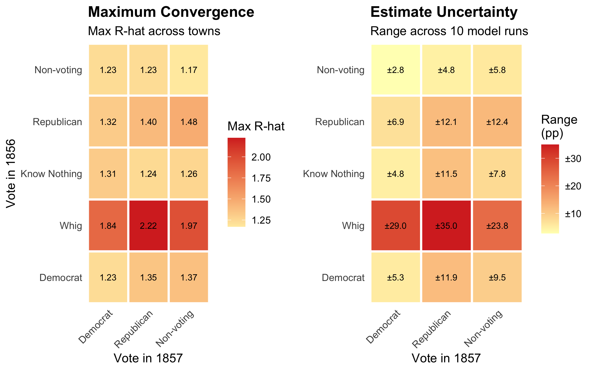
To see what high R-hat values look like in practice, consider what the posterior distributions of voter transitions look like for the 1854 to 1855 transitions to the Know Nothing party.
Where the distributions for multiple runs align, we likely have a genuine signal of voter transitions, such as runs 1, 2, 3, 5, 6, 9, and 10 for the 1854 Whig transition, which are centered on a value of roughly 10% or slightly more. Runs 7 and 8 are interesting because they show a dominant mode at just over 10% but also a secondary mode at roughly 7%, which corresponds to the value found in run 4. The fact that the dominant mode is close to the value found in other runs suggests that runs 7 and 8 aren’t outliers but are detecting a genuine signal of voter transitions. The fact that the secondary mode in runs 7 and 8 is close to the value found in run 4 is consistent with run 4 detecting a real but weaker signal of voter transitions.
The results for the 1854 Free Soil transition tell a different story, because most runs show a different mode or set of modes. Because Free Soilers had won a relatively smaller vote share, the data are sparser and the model may have had more trouble finding a signal. Alternatively, the data may reflect the Free Soil party drawing support from a more heterogeneous set of voters, making it harder for the model to find a single dominant mode.
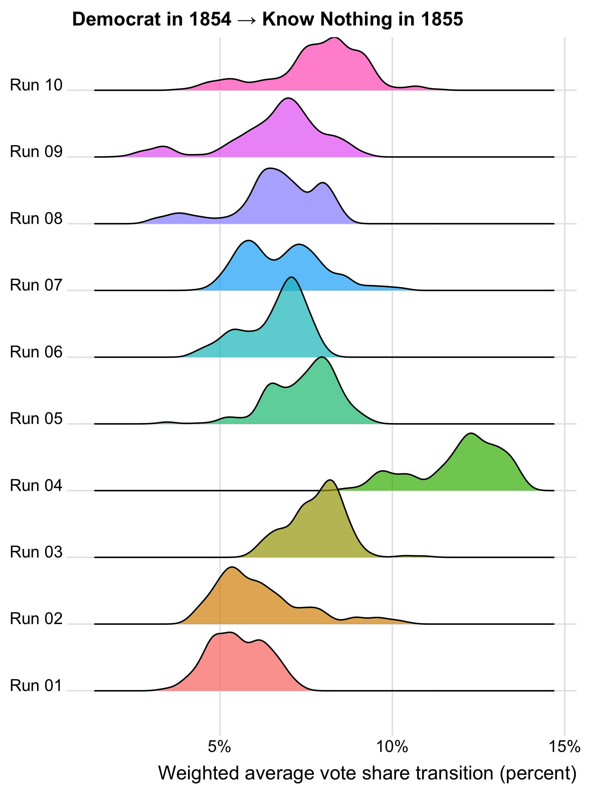
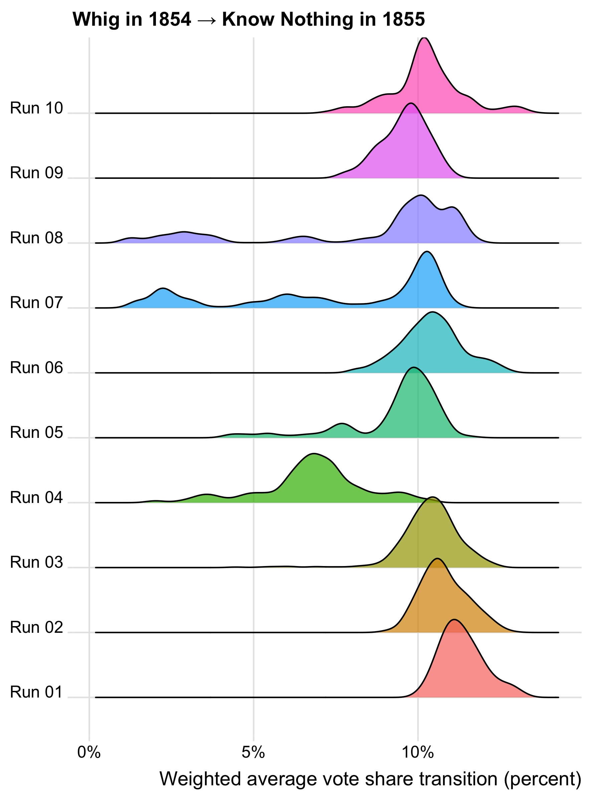
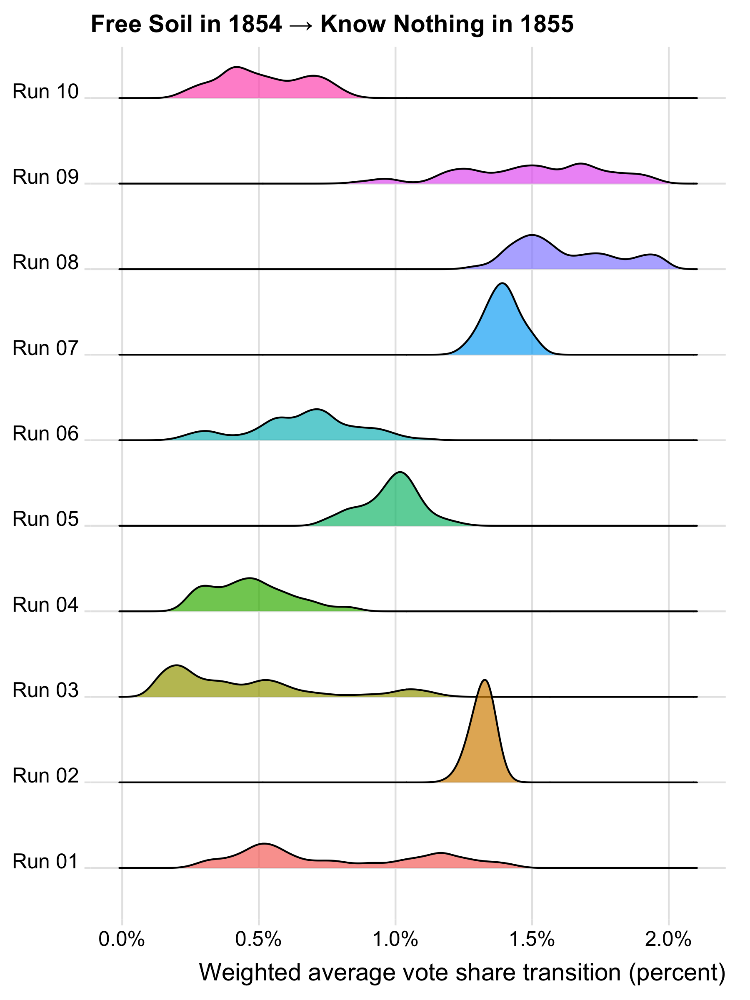
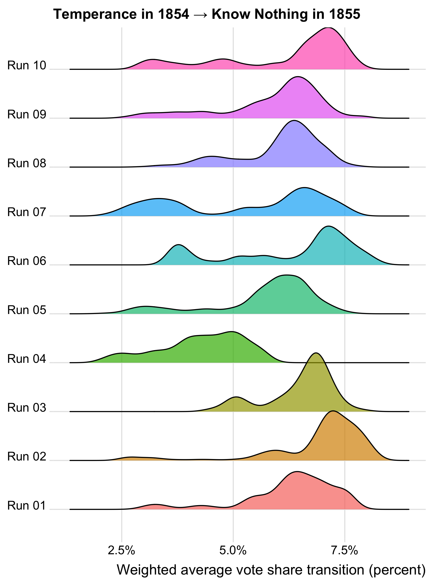
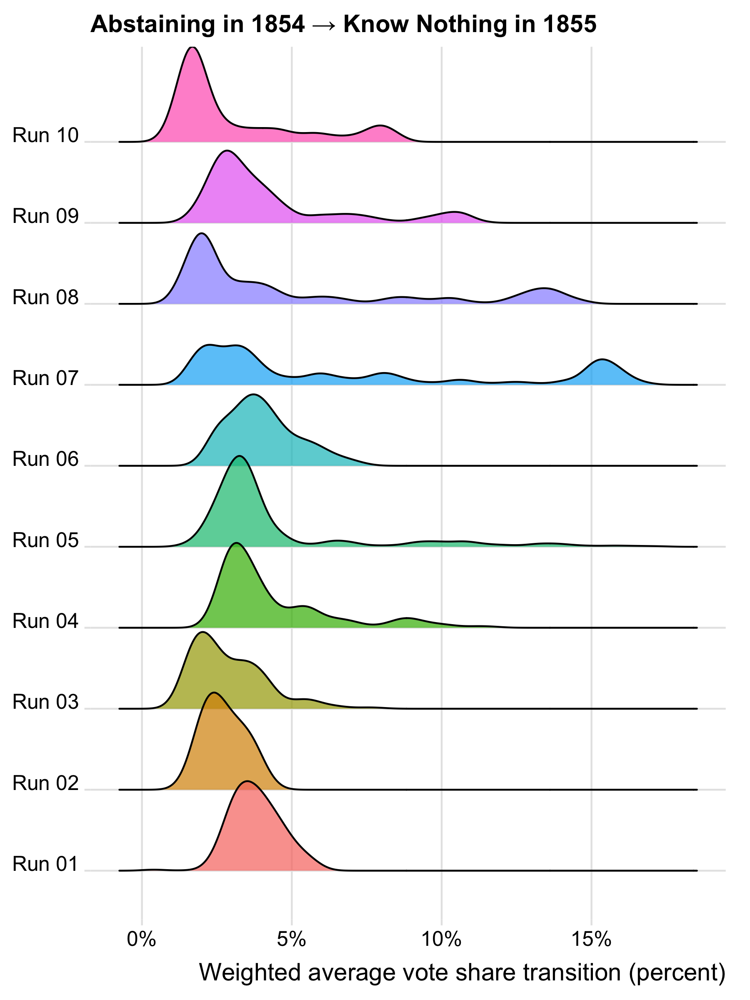
We can also see that high R-hat values are fairly uniformly distributed across the state, suggesting that the model’s failure to converge is not due to a small number of outlier towns but rather to widespread local variation in voter behavior.
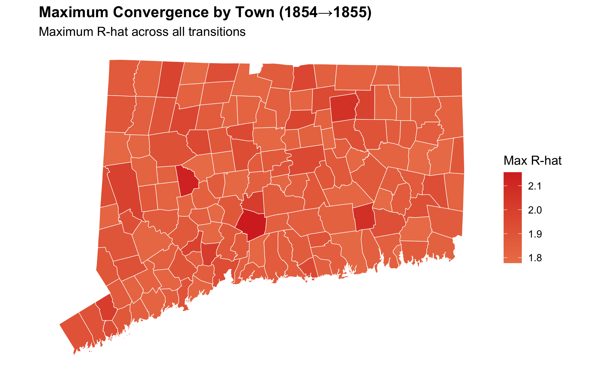